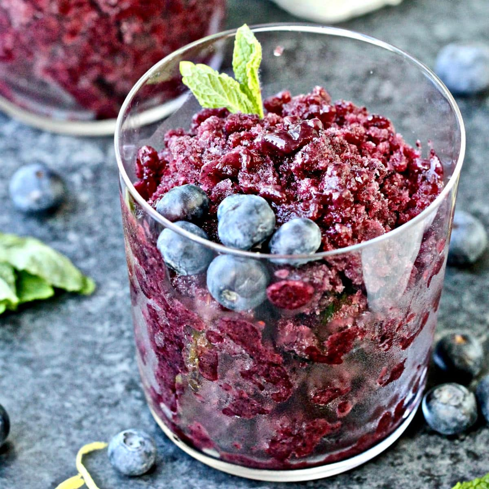

Blueberry

Description
A cool and refreshing treat. The more frequently you stir granita, the slushier it will be. The less you stir, the icier it will be. Use Splenda® if you prefer
You are gonna love this recipe.
Ingredients
- 2 ½ cups blueberries
- ½ cup white sugar
- 1 tablespoon white sugar
- ¾ cup water
- 1 tablespoon fresh lemon juice
Steps
- Blend the blueberries and sugar in a food processor until smooth; strain through a fine-mesh strainer, pressing with a wooden spoon to separate the blueberry puree from any chunks of skin or seeds.
- Stir the strained blueberry puree, water, and lemon juice together in a shallow glass baking dish or tray. Place the dish in the freezer; scrape and stir the blueberry mixture with a fork once an hour until evenly frozen and icy, about 4 hours. Scrape to fluff and lighten the ice crystals; spoon into chilled glasses to serve.